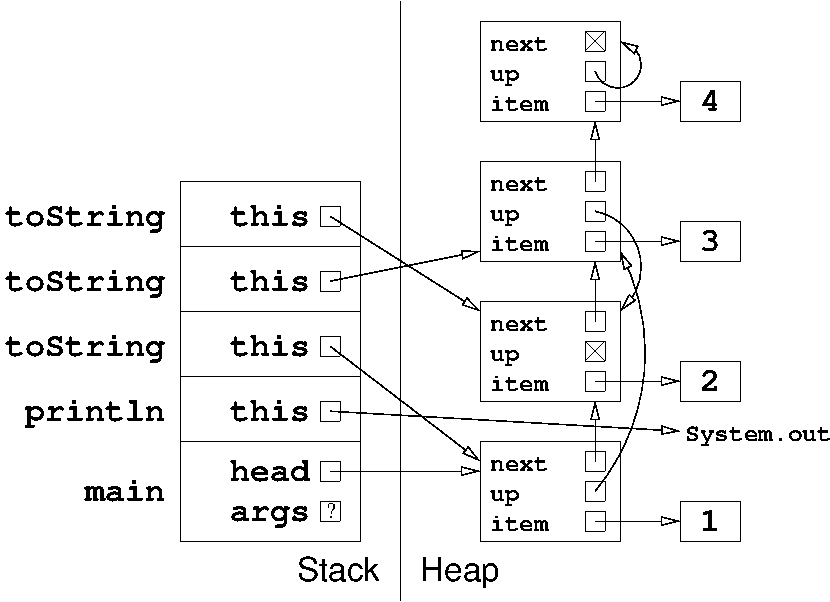

Problem 1. (10 points) A miscellany.
a.
int[][] arr = new int[3][];
arr[0] = new int[2];
arr[1] = new int[3];
arr[2] = new int[4];
Another way to do this is with an initializer:
int[][] arr = {new int[2], new int[3], new int[4]};
b. if (next != null && "Berkeley".equals(next.label)) {
Note that the example above also works correctly if next.label is null. A correct alternative would be
if (next != null && next.label != null && next.label.equals("Berkeley")) {
c. The signature of the method shatter is shatter(String yell). Shake.shatter is an example of a method that overrides the method Harlem.shatter.
d. For the values 0 and 2.
e. head, head.next, and myString.
f. return.
Problem 2. (7 points) Inheritance.
public class Harlem {
protected String yell;
protected static int shakes = 0; // Note that shakes is static.
public Harlem() {
yell = "Harlem Shake ";
shakes++;
}
public Harlem(int x) {
yell = "Brooklyn Shuffle ";
shakes = x;
}
public void shatter(String yell) {
yell = "Queens Shanking ";
}
}
public class Shake extends Harlem {
public Shake(int x) {
System.out.println(yell + shakes);
shatter(yell);
System.out.println(yell + shakes);
}
public void shatter(String yell) {
shakes++;
super.shatter(yell); // Not recursive!
}
public static void main(String[] args) {
Harlem s = new Shake(10);
Harlem t = new Harlem(10);
System.out.println(t.yell + s.shakes);
}
}
The code prints:
Harlem Shake 1 Harlem Shake 2 Brooklyn Shuffle 10Problem 3. (8 points) The heap and the stack.
Note: in the following diagram, we are not grading the stack frame for println. If you left it out, don't worry. 